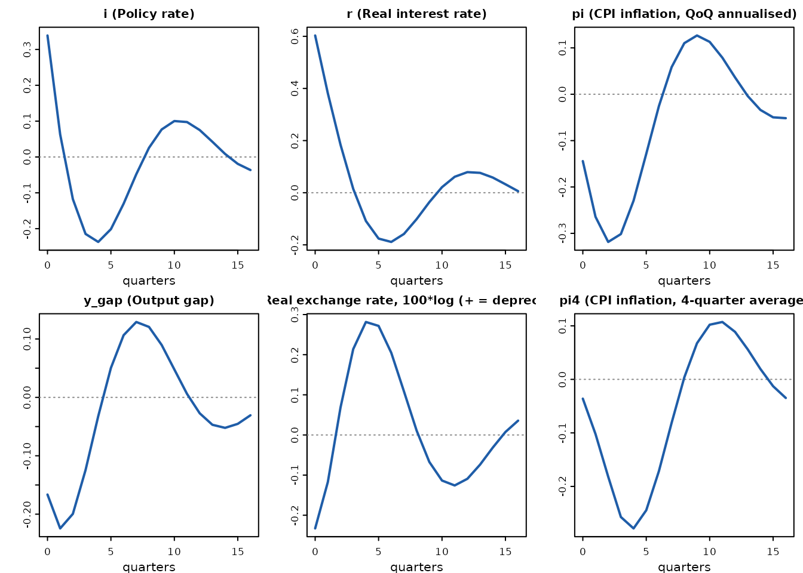
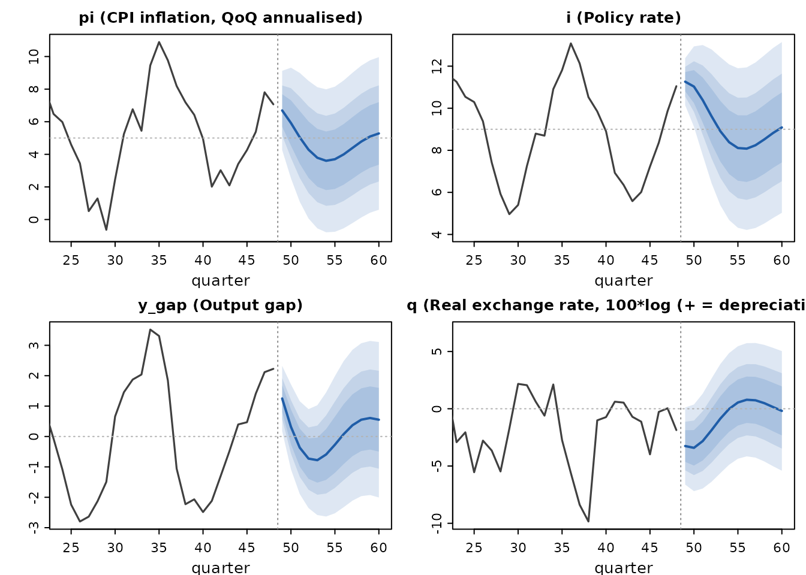
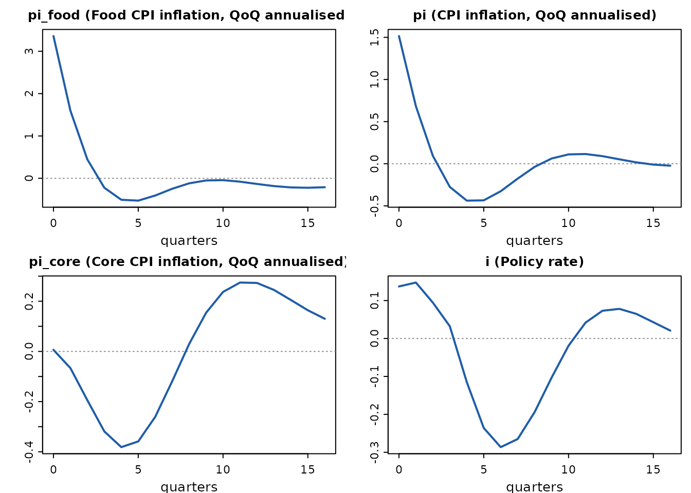
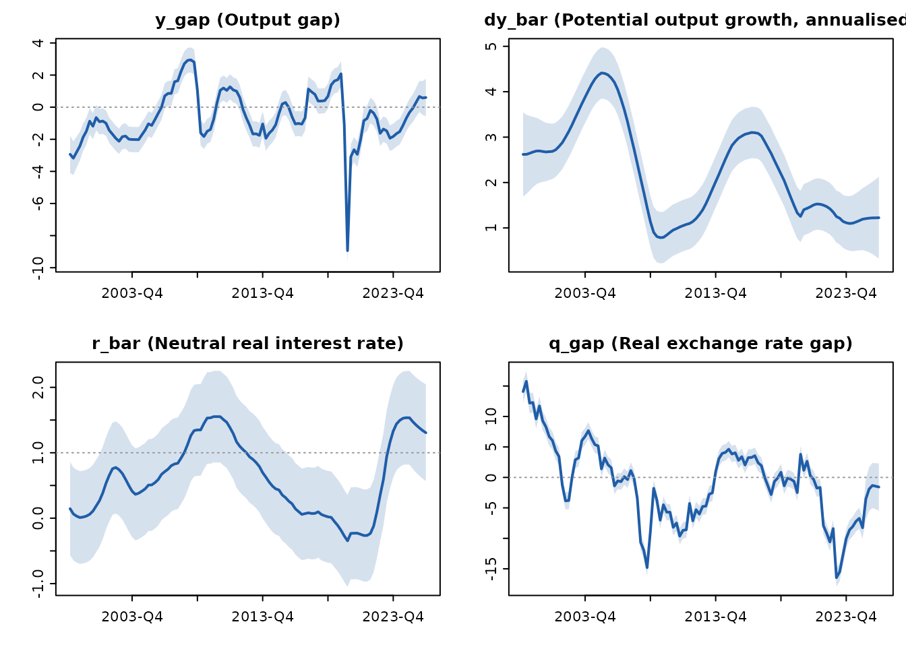
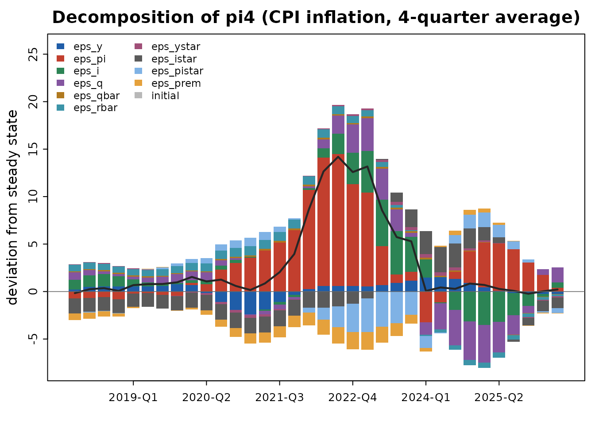
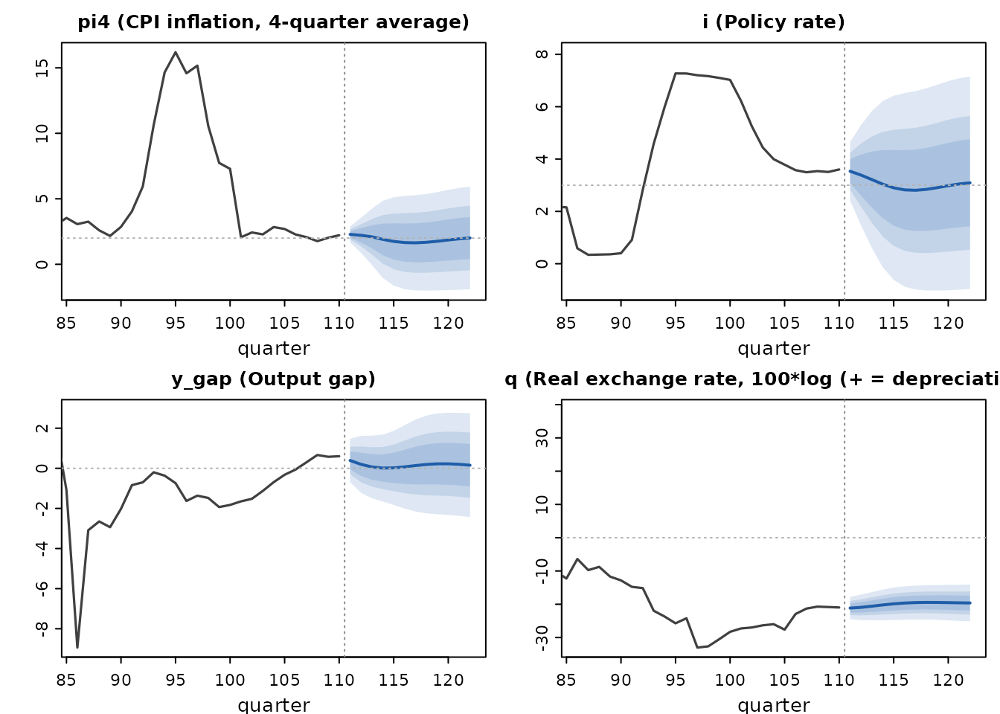
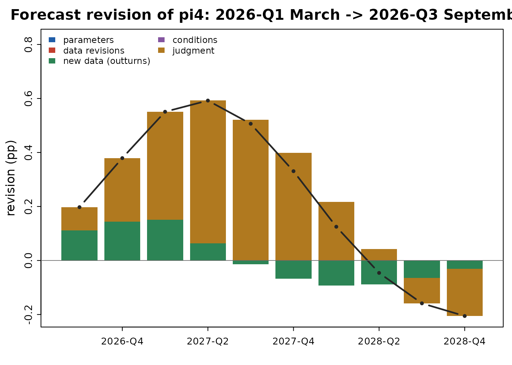

A forecast in ten minutes: the canonical QPM in qpmR
Source:vignettes/qpmR-quickstart.Rmd
qpmR-quickstart.RmdqpmR implements the class of semi-structural quarterly projection models (QPM) used in central-bank Forecasting and Policy Analysis Systems: an IS curve, a hybrid Phillips curve, a forward-looking inflation-targeting rule, and an exchange-rate block, solved under model-consistent expectations.
The canonical model
qpm_template("bkl") ships the canonical
Berg–Karam–Laxton (IMF WP/06/80–81) small open economy model with an
illustrative emerging-economy calibration — a 5 percent inflation target
and a positive country risk premium.
library(qpmR)
#>
#> Attaching package: 'qpmR'
#> The following object is masked from 'package:stats':
#>
#> var
m <- qpm_template("bkl")
m
#> <qpm_model> Canonical small open economy QPM (BKL, stationary trends)
#> 17 endogenous variables - 12 shocks - 25 parameters
#> dynamics: max lag 3, max lead 4 (auxiliary states added automatically at solve time)
#> calibration:
#> a1 = 0.7, a2 = 0.1, a3 = 0.2, a4 = 0.1, a5 = 0.25, b1 = 0.7, b2 = 0.25,
#> b3 = 0.1, c1 = 0.7, c2 = 1.5, c3 = 0.5, e1 = 0.7, pi_tar = 5, istar_ss
#> = 3, pistar_ss = 2, prem_ss = 3, qbar_ss = 0, g_ss = 3.5, rho_qbar =
#> 0.9, rho_rbar = 0.9, rho_g = 0.85, rho_ystar = 0.8, rho_istar = 0.85,
#> rho_pistar = 0.7, rho_prem = 0.85
#> variables: y_gap, pi, pi4, i, r, r_gap, q, q_gap, ... (see summary())The policy rule responds to expected year-on-year inflation four
quarters ahead, E(pi4[+4]); the four-quarter identity uses
lags back to pi[-3]. qpmR turns those long leads and lags
into auxiliary states automatically when the model is solved.
Solving and checking
sol <- qpm_solve(m)
sol
#> <qpm_solution> Canonical small open economy QPM (BKL, stationary trends)
#> states: 22 (17 declared + 5 auxiliary) - shocks: 12
#> Blanchard-Kahn: 22 stable roots = 22 predetermined states -> unique stable solution
#> roots: largest stable 0.900, smallest unstable 1.419, 17 infinite
#> steady state:
#> y_gap = 0, pi = 5, pi4 = 5, i = 9, r = 4, r_gap = 0, q = 0, q_gap = 0,
#> q_bar = 0, r_bar = 4, dy_obs = 3.5, dy_bar = 3.5, ystar_gap = 0, istar
#> = 3, pistar = 2, rstar = 1, prem = 3The Blanchard–Kahn line is a real diagnostic: an indeterminate or explosive model refuses to solve and the error names the usual economic cause. Violating the Taylor principle, for instance:
qpm_solve(qpm_calibrate(m, c2 = -0.5))
#> Error:
#> ! Blanchard-Kahn failure: 23 stable roots for 22 predetermined states (indeterminacy - multiple stable solutions / sunspots).
#> A too-weak policy response is the usual cause: check that the rule satisfies the Taylor principle (long-run response of the nominal rate to inflation above one).Monetary transmission
ir <- irf(sol, shock = "eps_i", horizon = 16)
ir
#> <qpm_irf> impulse responses (deviations from steady state)
#> shocks: eps_i (size 0.5)
#> peak effects:
#> shock variable peak quarter
#> eps_i dy_obs -0.6655 0
#> eps_i r 0.6032 0
#> eps_i r_gap 0.6032 0
#> eps_i i 0.3389 0
#> eps_i pi -0.3185 2
#> eps_i q 0.2815 4
#> eps_i q_gap 0.2815 4
#> eps_i pi4 -0.2785 4
#> eps_i y_gap -0.2244 1
#> eps_i dy_bar 0.0000 0
#> eps_i istar 0.0000 0
#> eps_i pistar 0.0000 0
#> eps_i prem 0.0000 0
#> eps_i q_bar 0.0000 0
#> eps_i r_bar 0.0000 0
#> eps_i rstar 0.0000 0
#> eps_i ystar_gap 0.0000 0
plot(ir, vars = c("i", "r", "pi", "y_gap", "q", "pi4"))
A policy tightening raises the real rate, opens a negative output gap, appreciates the currency on impact (UIP), and produces the hump-shaped disinflation with a mild rebound as policy later eases below neutral — the standard QPM transmission story.
History and forecast
Until the Kalman filter arrives in 0.2, initial states come from simulation:
histq <- simulate(sol, nsim = 48, seed = 7, burn = 20)
fc <- qpm_forecast(sol, from = histq, horizon = 12)
fc
#> <qpm_forecast> Canonical small open economy QPM (BKL, stationary trends) - 12 quarters ahead (h1 ... h12)
#> mean (90% band) at h = 1, 4, 8, 12:
#> y_gap 1.25 (0.18, 2.32) -0.73 (-2.36, 0.9) 0.08 (-2.33, 2.48) 0.55 (-2.01, 3.11)
#> pi 6.69 (4.26, 9.12) 4.29 (0.06, 8.51) 4 (-0.54, 8.53) 5.28 ( 0.6, 9.96)
#> pi4 6.74 (6.13, 7.34) 5.49 (2.54, 8.44) 3.77 (0.08, 7.46) 4.89 (0.97, 8.81)
#> i 11.3 (10.1, 12.4) 9.62 (6.44, 12.8) 8.08 (4.21, 11.9) 9.09 (5.03, 13.2)
#> r 5.34 (3.62, 7.06) 5.83 (3.58, 8.08) 3.69 (0.46, 6.91) 3.75 (0.35, 7.14)
#> r_gap 0.58 (-1.14, 2.3) 1.28 (-0.97, 3.52) -0.68 (-3.92, 2.56) -0.49 (-3.91, 2.93)
#> q -3.25 (-6.62, 0.11) -1.87 (-6.38, 2.64) 0.79 (-4.16, 5.73) -0.19 (-5.41, 5.04)
#> q_gap -3.42 (-6.8, -0.05) -1.99 (-6.47, 2.48) 0.7 (-4.17, 5.58) -0.24 (-5.39, 4.91)
#> q_bar 0.17 (-0.32, 0.66) 0.12 (-0.73, 0.98) 0.08 (-0.94, 1.1) 0.05 (-1.03, 1.14)
#> r_bar 4.76 (4.43, 5.09) 4.55 (3.98, 5.12) 4.36 (3.68, 5.04) 4.24 (3.51, 4.96)
#> dy_obs -0.37 (-4.97, 4.24) 2.07 (-3.46, 7.6) 4.91 (-1.12, 10.9) 3.28 (-3.12, 9.68)
#> dy_bar 3.53 ( 3.2, 3.86) 3.52 (2.99, 4.05) 3.51 (2.91, 4.11) 3.51 (2.89, 4.12)
#> ystar_gap 0.48 (-0.01, 0.97) 0.25 (-0.5, 1) 0.1 (-0.71, 0.91) 0.04 (-0.78, 0.86)
#> istar 2.16 (1.67, 2.66) 2.49 (1.69, 3.28) 2.73 (1.83, 3.63) 2.86 (1.93, 3.79)
#> pistar 2.42 ( 1.6, 3.24) 2.14 (1.03, 3.26) 2.03 (0.88, 3.18) 2.01 (0.86, 3.16)
#> rstar -0.13 (-0.89, 0.63) 0.38 (-0.73, 1.5) 0.71 (-0.5, 1.92) 0.85 (-0.37, 2.08)
#> prem 4.24 (3.42, 5.07) 3.76 (2.43, 5.09) 3.4 ( 1.9, 4.9) 3.21 (1.66, 4.75)
plot(fc, vars = c("pi", "i", "y_gap", "q"))
The fan bands are analytic, from the forecast-error variance
recursion V_h = P V_{h-1} P' + Q S Q'.
Specification checks
qpm_lint(m)
#> <qpm_lint>
#> v 17 equations for 17 variables
#> v every declared shock appears in an equation
#> v all calibrated parameters inside documented ranges
#> v solves: unique stable solution (Blanchard-Kahn satisfied); largest
#> stable root 0.900
#> v steady state exists and is unique (e.g. y_gap = 0, pi = 5, pi4 = 5)
#> all checks passedAdapting the model to your country
Real engagements never use the canonical model unchanged. Extension blocks make that adaptation reusable and reviewable instead of a fork.
The most common adaptation is disaggregating the CPI. Food is 30-50 percent of the basket across most of sub-Saharan Africa and South Asia, and a single-inflation model cannot represent the policy question there – supply shocks to food dominate headline, but policy should look through the relative-price component:
m_food <- add_block(qpm_template("bkl"), block_food_cpi(weight = 0.45))
plot(irf(qpm_solve(m_food), shock = "eps_pifood", horizon = 16),
vars = c("pi_food", "pi", "pi_core", "i"))
Food inflation jumps, headline follows scaled by the basket weight, and core barely moves – so the policy response stays small. That is the model saying what a good desk would say.
Exchange-rate management is the other common adaptation. One
intensity argument spans the regimes: zero reproduces the
free float exactly, larger values approach a peg.
peak_q <- function(m) {
ir <- irf(qpm_solve(m), shock = "eps_prem", horizon = 12, size = 1)
max(abs(ir$value[ir$variable == "q"]))
}
c(float = peak_q(qpm_template("bkl")),
managed = peak_q(add_block(qpm_template("bkl"), block_fx_intervention(1))),
peg = peak_q(add_block(qpm_template("bkl"), block_fx_intervention(4))))
#> float managed peg
#> 0.97426923 0.52554020 0.08260264Whatever a country team changes, qpm_diff() makes it
reviewable:
qpm_diff(qpm_template("bkl"), m_food)
#> <qpm_model_diff>
#> from: Canonical small open economy QPM (BKL, stationary trends)
#> to: Canonical small open economy QPM (BKL, stationary trends) + food CPI
#> + variables: pi_core, pi_food, rp_food
#> + shocks: eps_pifood
#> + parameters: w_food, f1, f2, f3, f4
#> + equations:
#> pi_core ~ b1 * pi_core[-1] + (1 - b1) * E(pi_core[+1]) + b2 * y_gap + b3 * q_gap + eps_pi
#> pi_food ~ f1 * pi_food[-1] + (1 - f1) * E(pi[+1]) + f2 * y_gap + f3 * q_gap - f4 * rp_food[-1] + eps_pifood
#> rp_food ~ rp_food[-1] + (pi_food - pi_core)/4
#> ~ equations changed:
#> - pi ~ b1 * pi[-1] + (1 - b1) * E(pi[+1]) + b2 * y_gap + b3 * q_gap + eps_pi
#> + pi ~ w_food * pi_food + (1 - w_food) * pi_coreReal data: Czechia
qpmR ships czechia, a quarterly dataset from 1996 in the
model’s units (see ?czechia). With
trends = "rw" the equilibrium real exchange rate and
potential growth become random walks — the model then has unit roots and
qpm_filter() switches to diffuse initialization
automatically.
mcz <- qpm_calibrate(qpm_template("bkl", trends = "rw"),
pi_tar = 2, istar_ss = 2, pistar_ss = 2,
prem_ss = 1, a5 = 0.4)
cz <- czechia[czechia$period >= "1999",
c("period", "pi4", "i", "q", "dy_obs", "istar", "pistar")]
fit <- qpm_filter(mcz, cz)
fit
#> <qpm_filtration> Canonical small open economy QPM (BKL, rw trends)
#> periods 1999-Q1-2026-Q2 (110) - observables: pi4, i, q, dy_obs, istar, pistar - missing: 12 of 660
#> log-likelihood: -1948.04 (approximate diffuse init, 2 unit roots)
#> innovation diagnostics: Ljung-Box min p = 0.00 (q) - autocorrelated innovations, check specification
#> outliers (|std innov| > 3): 48; largest: period 2023-Q1 pi4 (+16.9 sd)
#> latent states estimated: y_gap, pi, r, r_gap, q_gap, q_bar, r_bar, dy_bar, ...The smoothed latent states reproduce the known history — the pre-GFC boom, the 2009 and 2013 recessions, the COVID crater, the trend real appreciation of the koruna, and the post-GFC fall in potential growth:

Historical shock decomposition of the 2021-23 inflation wave:
dec <- qpm_decompose(fit)
plot(dec, var = "pi4", periods = (fit$n_obs - 33):fit$n_obs)
And a forecast from the smoothed end-of-sample state:
fc <- qpm_forecast(qpm_solve(mcz), from = fit, horizon = 12)
plot(fc, vars = c("pi4", "i", "y_gap", "q"))
Note the honesty of the diagnostics on real data: the Ljung-Box test
flags autocorrelated exchange-rate innovations (the driftless
q_bar random walk absorbs the appreciation trend through
its shocks), and the 2022-23 inflation surprises show up as large
outliers. That is the model asking for judgment and recalibration —
which is what 0.3 is for.
Policy analysis: conditions, judgment, rounds
A forecast becomes policy analysis when you can impose assumptions on
it. qpm_condition() inverts the model for the shocks behind
any assumed path – with an explicit anticipated switch,
because an announced rate path and a sequence of surprises are different
economics:
base <- qpm_forecast(qpm_solve(mcz), from = fit, horizon = 12)
hold <- qpm_condition(base,
i = stats::setNames(rep(3.5, 4), base$periods[1:4]),
anticipated = TRUE, instruments = "eps_i")
hold
#> <qpm_forecast> Canonical small open economy QPM (BKL, rw trends) - 12 quarters ahead (2026-Q3 ... 2029-Q2)
#> conditions: 4 on i (anticipated; instruments: eps_i)
#> implied shocks, max |sd|: eps_i 0.68
#> mean (90% band) at h = 1, 4, 8, 12:
#> y_gap 0.47 (-0.69, 1.64) 0.12 (-1.67, 1.91) 0.24 (-1.66, 2.13) 0 (-2.34, 2.34)
#> pi 2.32 (0.28, 4.37) 2.03 (0.07, 3.99) 2.21 (-1.57, 5.98) 2.02 (-2.94, 6.99)
#> pi4 2.31 ( 1.8, 2.82) 2.16 (0.73, 3.58) 2.13 (0.12, 4.13) 2.12 (-2.4, 6.64)
#> i 3.5 ( 3.5, 3.5) 3.5 ( 3.5, 3.5) 3.14 (-1.47, 7.75) 3.14 (-2.27, 8.54)
#> r 1.3 (-1.16, 3.77) 1.46 (-0.85, 3.77) 0.93 (-1.34, 3.21) 1.18 (-2.35, 4.71)
#> r_gap 0.03 (-2.44, 2.49) 0.26 (-2.07, 2.58) -0.2 (-2.49, 2.09) 0.09 (-3.48, 3.67)
#> q -20.9 (-25.7, -16.2) -20.2 (-25.5, -14.9) -19.7 (-25.6, -13.8) -19.7 (-24.6, -14.9)
#> q_gap -1.56 (-6.25, 3.14) -0.77 ( -6, 4.46) -0.31 (-6.06, 5.43) -0.32 (-4.91, 4.27)
#> q_bar -19.4 (-19.9, -18.9) -19.4 (-20.4, -18.4) -19.4 (-20.8, -18) -19.4 (-21.1, -17.7)
#> r_bar 1.28 (0.95, 1.6) 1.2 (0.63, 1.77) 1.13 (0.45, 1.81) 1.09 (0.36, 1.81)
#> dy_obs 0.72 (-4.22, 5.66) 0.9 (-4.54, 6.34) 1.19 (-4.34, 6.73) 1 (-5.12, 7.13)
#> dy_bar 1.22 ( 0.9, 1.55) 1.22 (0.57, 1.88) 1.22 (0.29, 2.16) 1.22 (0.09, 2.36)
#> ystar_gap 0.45 (-0.04, 0.95) 0.23 (-0.52, 0.98) 0.1 (-0.71, 0.9) 0.04 (-0.78, 0.86)
#> istar 2.05 (1.55, 2.54) 2.03 (1.24, 2.82) 2.01 (1.12, 2.91) 2.01 (1.09, 2.93)
#> pistar 2.64 (1.82, 3.46) 2.22 (1.11, 3.33) 2.05 (0.92, 3.19) 2.01 (0.87, 3.16)
#> rstar -0.4 (-1.52, 0.71) -0.13 (-1.49, 1.24) -0.02 (-1.45, 1.41) 0 (-1.22, 1.22)
#> prem 1.17 (0.35, 1.99) 1.1 (-0.19, 2.4) 1.05 (-0.4, 2.51) 1.03 (-0.49, 2.55)Judgment is a logged, auditable operation rather than a spreadsheet tweak:
judged <- add_judgment(base, pi4 = stats::setNames(0.4, base$periods[3]),
author = "prices desk",
rationale = "announced energy-tariff increase")
judgment_log(judged)
#> <judgment ledger> 1 entry
#> id time author variable period add target
#> 1 2026-08-26 18:26 prices desk pi4 2027-Q1 +0.40 2.5
#> rationale
#> announced energy-tariff increase
#> implied shocks, max |sd|: eps_y 0.04, eps_pi 0.20, eps_i 0.04, eps_q 0.09, eps_qbar 0.01, eps_rbar 0.01, eps_ystar 0.01, eps_istar 0.03, eps_pistar 0.02, eps_prem 0.05A forecast round archives the whole pipeline – model, calibration,
data vintage, filtration, conditioned forecast – as one replayable
object, and compare_rounds() answers the question every
chief economist asks: why did the forecast move?
czA <- cz[cz$period <= "2025-Q4", ]
rA <- qpm_round("2026-Q1 March", mcz, czA, horizon = 12)
rB <- qpm_round("2026-Q3 September", mcz, cz, horizon = 12)
rB <- add_judgment(rB, pi4 = c("2027-Q1" = 0.4), author = "prices desk",
rationale = "announced energy-tariff increase")
rev <- compare_rounds(rA, rB, variables = c("pi4", "i", "y_gap"))
print(rev, variables = "pi4", periods = "2027-Q1")
#> <qpm_revision> 2026-Q1 March -> 2026-Q3 September
#> pi4 at 2027-Q1: 1.95 -> 2.50 (+0.55)
#> +0.00 parameters
#> +0.00 data revisions
#> +0.15 new data (outturns)
#> +0.00 conditions
#> +0.40 judgment
#> (+ 9 more periods; print(x, variables=, periods=) or plot(x, variable=))
plot(rev, variable = "pi4")
The contributions telescope, so they sum to the total revision
exactly, and the decomposition endpoints are verified against the
archived rounds. save_round() / load_round() /
list_rounds() manage the on-disk round store, with
human-readable CSV sidecars for auditing without R.
Closing the round: audit and report
An archived round is only useful if it still reproduces.
verify_round() re-runs the whole pipeline from the round’s
own contents — model, calibration, data vintage, conditions and judgment
— and checks the published numbers against the archive:
verify_round(rB)
#> <qpm_verification> 2026-Q3 September
#> archived under qpmR 1.0.0.9000, verified under 1.0.0.9000
#> re-ran the pipeline with 0 conditions and 1 judgment entry
#> v forecast reproduces exactly (largest deviation 0)A round that no longer reproduces is a finding, not a mystery: the report names the largest deviation, the variables responsible, and any qpmR version drift. Loaded from a store, it also checks the CSV sidecars against the object, so a hand-edited audit trail shows up.
The round then becomes the deliverables a policy meeting runs on — the standard chart pack and the monetary policy report, which carries the executive summary, the fan charts, the gaps, the shock decomposition, the judgment ledger and the revision against the previous round:
chart_pack(rB, "chart_pack.pdf")
qpm_report(rB, "mpr.html", compare_to = rA)qpm_report() always writes the .Rmd source
next to its output, on the principle that institutions replace the
template’s text, not its plumbing.
Where this is going
Estimation — priors, posterior sampling on the filter likelihood,
identification diagnostics, marginal likelihoods, and posterior fan
charts — is covered in vignette("qpmR-estimation"). Next on
the roadmap: the full FPAS reporting workflow (Quarto report templates,
chart packs). See the README.